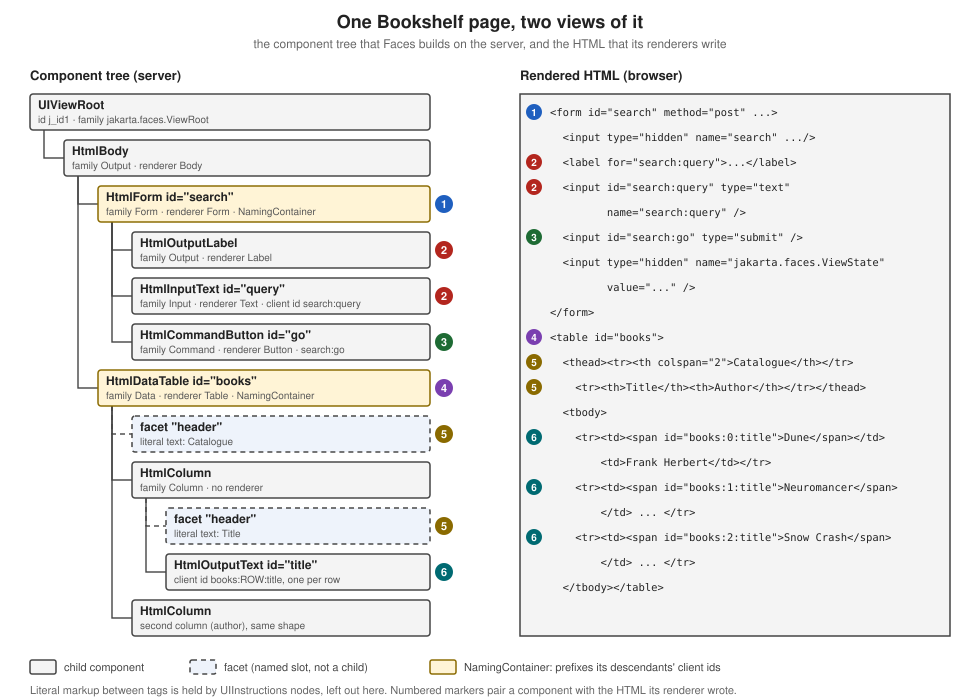

Architecture & Component Model
|
This content was generated with the assistance of AI and should be verified against the official documentation before being relied on in production. |
This page is written against Jakarta Faces 4.1 (API jakarta.faces:jakarta.faces-api 4.1.2, part of Jakarta EE 11,
Java SE 17 or later), with Eclipse Mojarra 4.1.17 and Apache MyFaces Core 4.1.4 as the two implementations the examples
were run on, on Apache Tomcat 11 with Weld 6 for CDI, with the project compiled for Java 21. Faces 4.0 (Jakarta EE 10,
Java SE 11 or later) is still widely deployed; every difference that matters for this page is flagged in
What Changed per Version. Faces 5.0 is not released: the latest milestone on 2026-10-08 is 5.0.0-M9, and anything said about
it is "upcoming", never current behaviour.
Faces is a component framework: a page is a tree of server-side objects, and everything else on this page — the servlet that receives the request, the context objects it carries, the renderers that write the markup and the factories that let you replace almost any of it — exists to build, process and render that tree. The page names every moving part, shows where it acts in the request, and builds the Bookshelf (a catalogue of books, authors and reviews) up one example at a time. Every example below was compiled and executed in a scratch Maven project on both implementations; the output shown is real output unless it says otherwise.
The Big Picture
A Faces application is an ordinary servlet web application with one extra servlet, FacesServlet. For every request
that reaches it, the servlet asks a factory for a FacesContext, hands that context to a Lifecycle to process the
incoming request and then to render the response, and finally releases the context. The sequence is fixed by the
specification.
The next table lists the objects that appear in that picture and the rest of this page.
| Object | Scope and lifetime | Role |
|---|---|---|
|
One instance per web application, normally declared in |
The single entry point; runs the lifecycle for every request that is mapped to it |
|
One per request, created by |
Holds everything about the request being processed: the view root, messages, response writer, current phase, flags such as |
|
One per |
Faces' view of the servlet (or portlet) world: request, session and application maps, parameters, headers, redirects, the flash |
|
One per web application |
The factory and registry of the framework: creates components, converters, validators and behaviours, and holds the |
|
One per view, saved and restored between requests |
The root of the component tree; carries the view id, locale, render kit id and phase listeners |
|
Rebuilt or restored on each request; saved as state |
The server-side model of the page |
|
Registered once per web application |
Decode request parameters into components and encode components into markup |
FacesServlet
jakarta.faces.webapp.FacesServlet is a jakarta.servlet.Servlet that accepts incoming requests and passes them to
the appropriate Lifecycle. The specification defines its init and service steps: init acquires the
FacesContextFactory and a Lifecycle (the lifecycle id comes from the jakarta.faces.LIFECYCLE_ID servlet
init-parameter, then the context-parameter of the same name, then the value DEFAULT), and service runs four steps
for each request: obtain a FacesContext, call execute() on the lifecycle, call render() on the lifecycle and call
release() on the context. A FacesException thrown by execute() or render() is rethrown as a ServletException.
The servlet name is free, but the mapping must use the same name. Any valid url-pattern is allowed, by prefix
(/faces/*) or by extension (*.faces); the specification also describes a default mapping of the servlet to
*.xhtml, which jakarta.faces.DISABLE_FACESSERVLET_TO_XHTML switches off, and Faces 4.0 added an automatic
extensionless mapping. The complete mapping options, faces-config.xml and @FacesConfig belong to the project setup
page of this section; this page needs only one declaration.
<?xml version="1.0" encoding="UTF-8"?>
<web-app xmlns="https://jakarta.ee/xml/ns/jakartaee"
xmlns:xsi="http://www.w3.org/2001/XMLSchema-instance"
xsi:schemaLocation="https://jakarta.ee/xml/ns/jakartaee https://jakarta.ee/xml/ns/jakartaee/web-app_6_1.xsd"
version="6.1">
<servlet>
<servlet-name>facesServlet</servlet-name>
<servlet-class>jakarta.faces.webapp.FacesServlet</servlet-class>
<load-on-startup>1</load-on-startup>
</servlet>
<servlet-mapping>
<servlet-name>facesServlet</servlet-name>
<url-pattern>*.xhtml</url-pattern>
</servlet-mapping>
</web-app>The servlet is deliberately thin. Everything it does with a request is delegated to the factories (see Factories and the Decorator Pattern)
and to the Lifecycle, and the specification allows implementations to offer other ways to start the lifecycle, which
is why code that depends on a particular entry point is not portable.
FacesContext
jakarta.faces.context.FacesContext represents all the contextual information associated with processing one incoming
request and creating the corresponding response. The implementation creates it before the lifecycle starts, through
FacesContextFactory.getFacesContext(...), and calls release() when the lifecycle is complete, so that it can be
pooled. Because it is bound to the request, it is the object you reach for from almost every other Faces API.
-
FacesContext.getCurrentInstance()returns the context of the request being processed on the current thread, ornulloutside a Faces request. -
In a CDI bean it can be injected: the specification lists
FacesContext,ExternalContext,Flash,ResourceHandlerandHttpSessionamong the objects valid for@Inject(Faces 2.3 and later). -
In an EL expression the implicit object
facesContextis the same object.
The members used most often group as follows.
| Member | Purpose |
|---|---|
|
The component tree of the current view |
|
The servlet-world facade and the application singleton, as a convenience over the factory lookup |
|
The message queue read by |
|
Where the request is in the lifecycle, and whether it is a postback to a previously rendered view |
|
Short-circuit the lifecycle: jump to Render Response, or declare the response already written |
|
What renderers write into, and the render kit of the current view |
|
A map that lives exactly as long as the Faces lifecycle of the request |
|
Ajax requests: which components to execute and render |
The example below builds a request-scoped bean that reads from the context, the external context and the application, and a page with one button that runs it. The bean’s work is done in the action method, not in a getter, so the values are computed once and in the phase you expect.
package org.example.bookshelf;
import jakarta.enterprise.context.RequestScoped;
import jakarta.faces.component.html.HtmlCommandButton;
import jakarta.faces.component.html.HtmlInputText;
import jakarta.faces.context.ExternalContext;
import jakarta.faces.context.FacesContext;
import jakarta.inject.Inject;
import jakarta.inject.Named;
import java.util.ArrayList;
import java.util.List;
@Named
@RequestScoped
public class RequestInfo {
@Inject
private FacesContext facesContext;
@Inject
private ExternalContext externalContext;
private final List<String> lines = new ArrayList<>();
public String describe() {
lines.add("phase = " + facesContext.getCurrentPhaseId());
lines.add("postback = " + facesContext.isPostback());
lines.add("viewId = " + facesContext.getViewRoot().getViewId());
lines.add("renderKitId = " + facesContext.getViewRoot().getRenderKitId());
lines.add("locale = " + facesContext.getViewRoot().getLocale());
lines.add("projectStage = " + facesContext.getApplication().getProjectStage());
lines.add("contextPath = " + externalContext.getRequestContextPath());
lines.add("servletPath = " + externalContext.getRequestServletPath());
lines.add("q parameter = " + externalContext.getRequestParameterMap().get("q"));
lines.add("request class = " + externalContext.getRequest().getClass().getSimpleName());
lines.add("faces context class = " + facesContext.getClass().getSimpleName());
lines.add("viewId from EL = " + facesContext.getApplication()
.evaluateExpressionGet(facesContext, "#{facesContext.viewRoot.viewId}", String.class));
lines.add("default events = " + new HtmlInputText().getDefaultEventName() + ", "
+ new HtmlCommandButton().getDefaultEventName());
return null;
}
public List<String> getLines() {
return lines;
}
}<!DOCTYPE html>
<html xmlns="http://www.w3.org/1999/xhtml"
xmlns:h="jakarta.faces.html"
xmlns:ui="jakarta.faces.facelets">
<h:head><title>Request info</title></h:head>
<h:body>
<h:form id="info">
<h:commandButton id="describe" value="Describe" action="#{requestInfo.describe}"/>
</h:form>
<ul>
<ui:repeat value="#{requestInfo.lines}" var="line">
<li><h:outputText value="#{line}"/></li>
</ui:repeat>
</ul>
</h:body>
</html>Running the page and pressing the button produces the following lines (Mojarra 4.1.17, JVM started with an English
locale; MyFaces 4.1.4 prints the same values except for the phase, which it prints as INVOKE_APPLICATION(5) rather
than INVOKE_APPLICATION 5):
phase = INVOKE_APPLICATION 5
postback = true
viewId = /info.xhtml
renderKitId = HTML_BASIC
locale = en_US
projectStage = Production
contextPath = /bookshelf
servletPath = /info.xhtml
q parameter = null
request class = RequestFacade
faces context class = FacesContext$Proxy$_$$_WeldClientProxy
viewId from EL = /info.xhtml
default events = valueChange, actionThree details stand out. The injected FacesContext is a CDI client proxy, not the implementation class, so compare
contexts with FacesContext.getCurrentInstance() if identity matters. The phase line proves the action ran in Invoke
Application, which is why an action method can read the model values that Update Model Values has just written. And the
last line anticipates the behaviours section: the default client event of h:inputText is valueChange and that of a
command is action.
ExternalContext
jakarta.faces.context.ExternalContext exists so that Faces code does not depend on the servlet API. Most of the time
the environment is a servlet container, but the abstraction also covered portlets, and it gives wrappers and tests a
single seam to replace. It exposes the container objects as maps and as methods, and the specification states that
none of its properties can be set through it. The ones you use:
-
the scope maps
getApplicationMap(),getSessionMap()andgetRequestMap(), plusgetRequestParameterMap(),getRequestParameterValuesMap()andgetRequestHeaderMap() -
getRequestContextPath(),getRequestServletPath()andgetRequestPathInfo()for URL work -
getInitParameter(...)andgetInitParameterMap()forweb.xmlcontext-parameters -
redirect(url)andgetFlash()for redirects that carry messages -
getRequest(),getResponse()andgetContext()as escape hatches to the raw servlet objects, which returnObjectprecisely because the abstraction is not tied to servlets -
addResponseCookie(...), which Faces 4.0 extended with custom cookie attributes such asSameSite
A pitfall hides in the EL implicit objects. The implicit object application is not the Faces Application; per the
specification’s table of implicit objects it is externalContext.getContext(), which in a servlet container is the
ServletContext. To reach the Faces Application from EL or Java, go through facesContext.application or
facesContext.getApplication().
Application
jakarta.faces.application.Application is the singleton of the framework for one web application. You reach it with
facesContext.getApplication(), or through ApplicationFactory in code that runs outside a request. It is both a
factory and a registry.
-
Factory methods create the objects Faces is made of, by logical name:
createComponent(String componentType),createComponent(FacesContext, String componentType, String rendererType)(which also assigns the renderer type),createConverter(...),createValidator(...)andcreateBehavior(...). The logical names come from@FacesComponent,@FacesConverter,@FacesValidatorand@FacesBehavior(orfaces-config.xml). -
Pluggable services are held here:
getViewHandler(),getNavigationHandler(),getResourceHandler(),getStateManager(),getFlowHandler(),getELResolver(),getExpressionFactory()andgetSearchExpressionHandler(). Each can be decorated; see Factories and the Decorator Pattern. -
Configuration facts are readable:
getProjectStage(),getSupportedLocales()andgetMessageBundle(). -
Event subscription is available through
subscribeToEvent(...)and related methods, which attach aSystemEventListenerfor application-wide events such asPostConstructApplicationEvent. -
Expression evaluation from Java is available through
evaluateExpressionGet(FacesContext, String, Class).
The listing below creates a component by its component type and evaluates an expression, the two most common reasons
to call the application from application code. The BadgeBean is the one developed later in The binding Attribute and Its Pitfalls; this
excerpt shows only the creation step.
Application application = facesContext.getApplication();
// a component by its registered type: the standard type constants live on the concrete classes
HtmlOutputText badge = (HtmlOutputText) application.createComponent(HtmlOutputText.COMPONENT_TYPE);
badge.setValue("Classic");
// an EL expression evaluated from Java
String viewId = application.evaluateExpressionGet(facesContext, "#{facesContext.viewRoot.viewId}", String.class);UIViewRoot
The component tree has exactly one root, an instance of jakarta.faces.component.UIViewRoot. It is the first
component created for a view and the only one that is not a child of anything; facesContext.getViewRoot() returns it.
It is a UIComponent like the others, so it has children and facets, but it also carries view-level properties:
-
viewId, the logical path of the page (/catalog.xhtml), andlocale -
renderKitId, the id of the render kit that renders the view; the defaultViewHandlercallscalculateRenderKitId()and stores the result here, which is how an application switches render kit per view -
phase listeners,
addPhaseListener(...)and thebeforePhase/afterPhasemethod expressions, which the<f:view>tag exposes to page authors -
getViewMap(), the map behind@ViewScopedbeans -
createUniqueId(), the source of the generatedj_id...identifiers -
getDoctype()(Faces 4.0 and later) and the component resources collection used forh:headresources -
the metadata facet, where
f:metadataplaces the view parameters of a bookmarkable page
UIViewRoot is not a naming container: its descendants' client ids are not prefixed with the root’s own id, which is
why the form in the tree later on is search and not j_id1:search. Its id is generated, j_id1 on Mojarra and
j_id__v_0 on MyFaces, so it should never be written into scripts or tests.
The <f:view> tag configures the view root from the page. It is optional, and Facelets creates a root anyway; use it
when you need the locale, the render kit or the phase listeners to be set from the markup.
The attributes that map to UIViewRoot properties are locale, renderKitId, contentType, encoding,
transient, beforePhase and afterPhase. The page below sets two of them and reuses the RequestInfo bean from the
previous section to prove it.
<!DOCTYPE html>
<html xmlns="http://www.w3.org/1999/xhtml"
xmlns:h="jakarta.faces.html"
xmlns:f="jakarta.faces.core"
xmlns:ui="jakarta.faces.facelets">
<f:view locale="fr" renderKitId="HTML_BASIC">
<h:head><title>View root</title></h:head>
<h:body>
<h:form id="view">
<h:commandButton id="describe" value="Describe" action="#{requestInfo.describe}"/>
</h:form>
<ul>
<ui:repeat value="#{requestInfo.lines}" var="line">
<li><h:outputText value="#{line}"/></li>
</ui:repeat>
</ul>
</h:body>
</f:view>
</html>Pressing the button prints locale = fr and renderKitId = HTML_BASIC in the same listing as before, on both
implementations.
The Component Tree
When a request asks for a Facelets view, Faces builds a tree of UIComponent objects from the page: the tree is the
runtime form of the page. Each tag in the page that stands for a component (h:form, h:inputText, h:dataTable)
creates one node, and the nodes are linked by parent and child references. The tree is what the lifecycle walks: every
phase is a recursive call down the tree. The figure shows the tree of the Bookshelf catalogue page on the left and
the HTML its renderers wrote on the right; the numbered markers pair each component with its markup.

How the tree comes to exist depends on the request. On an initial request the view is built from the page during Render Response. On a postback the tree is restored in Restore View and then processed. With partial state saving, which is the mechanism the specification keeps (full state saving is deprecated since 4.1, see What Changed per Version), the implementations rebuild the tree from the view definition and apply the saved state to it, which is why changes you make to the tree after it is built must be made in ways Faces can track.
UIComponent and UIComponentBase
jakarta.faces.component.UIComponent is the abstract base class of every component, and UIComponentBase supplies
default implementations of nearly every method, so component writers extend UIComponentBase or one of its concrete
subclasses. The properties every component has:
| Member | Meaning |
|---|---|
|
The component identifier: starts with a letter, then letters, digits, dashes or underscores; unique within the closest ancestor naming container |
|
The identifier used in the markup and in request parameters, derived from the id and the enclosing naming containers; see Naming Containers and Client Identifiers |
|
The component family: a string shared by components that a renderer can treat alike; see Component Families and the Standard Classes |
|
The key of the renderer, within the family, that decodes and encodes this component; |
|
The tree structure; the children list is mutable and keeps the parent links up to date |
|
Named subordinate components, outside the child list; see Facets |
|
A map that reads and writes bean properties of the component and, for names that are not properties, a generic attribute store; this is what the tag attributes end up in |
|
The value expression behind a property such as |
|
Attributes the renderer writes unchanged into the markup (HTML5 friendly markup) |
|
Whether the component takes part in rendering and processing, and whether it is left out of saved state |
|
The helper that stores component properties so that they are saved and restored with the view |
Beyond structure, UIComponentBase implements the processing methods the lifecycle calls on every node:
processDecodes, processValidators and processUpdates walk the subtree and call decode(), validate() and
updateModel() on the components that have them; broadcast(FacesEvent) delivers queued events; and
encodeBegin(), encodeChildren() and encodeEnd() (driven by encodeAll()) write the markup. The lifecycle
page of this section shows when each is invoked.
Two navigation helpers matter in practice. findComponent(expr) searches by id using the naming-container rules of
Naming Containers and Client Identifiers, and visitTree(VisitContext, VisitCallback) visits the subtree with the visit API that
Faces 2.0 introduced, handling iterating components correctly. The tree inspector below uses both.
Property Values, ValueExpressions and the StateHelper
A tag attribute such as rendered="#{bookBean.admin}" or max="#{shelfBean.maxStars}" does not copy a value into the
component. Facelets stores the expression itself, with setValueExpression(name, expr), and the component evaluates it each
time the property is read. getValueExpression(name) returns the stored expression or null, and a literal attribute
(max="7") is set through the property setter instead. The standard properties follow one convention: the getter asks the
StateHelper for the property, and StateHelper.eval(key) returns the value stored with put(key, value) or, when none was
stored, evaluates the ValueExpression registered under the same name; eval(key, defaultValue) and, since Faces 4.0,
eval(key, Supplier) give the fallback when neither exists. A property written this way is therefore settable both from
Java and from a page, and the expression is evaluated again on every read, which is why the same attribute can show a
different value in the next request.
The members that make this work are interfaces every component implements through UIComponent:
PartialStateHolder (markInitialState(), initialStateMarked(), clearInitialState()) tells the component to report only
what changed since the view was built, the basis of partial state saving; TransientStateHolder keeps values that must
never be saved; and SystemEventListenerHolder (getListenersForEventClass) is what lets a component be the source of a
SystemEvent and keep the listeners subscribed to it with subscribeToEvent. The state methods are covered in the
state saving page, the system events in
events and listeners.
The class below was compiled against the 4.1.2 API but, unlike the other examples of this page, was not run.
package org.example.bookshelf;
import jakarta.el.ValueExpression;
import jakarta.faces.application.Application;
import jakarta.faces.component.UIInput;
import jakarta.faces.context.FacesContext;
public class PropertyEvaluation {
/** The component of the example below; {@code getMax} reads the StateHelper, then the expression. */
public static class Stars extends UIInput {
public int getMax() {
return (Integer) getStateHelper().eval("max", 5);
}
public void setMax(int max) {
getStateHelper().put("max", max);
}
}
public static void configure(FacesContext context, Stars stars) {
Application application = context.getApplication();
ValueExpression expression = application.getExpressionFactory().createValueExpression(
context.getELContext(), "#{shelfBean.maxStars}", Integer.class);
// what <bk:rating max="#{shelfBean.maxStars}"/> does: store the expression, not a value
stars.setValueExpression("max", expression);
stars.getMax(); // evaluates #{shelfBean.maxStars} now
// what <bk:rating max="7"/> does: store a literal in the StateHelper
stars.setValueExpression("max", null);
stars.setMax(7);
stars.getMax(); // 7
}
}Source: StateHelper API, UIComponent API and PartialStateHolder API
Component Families and the Standard Classes
Faces ships a set of component classes whose roles are fixed by the specification. They form a small hierarchy, and a few behavioural interfaces describe what each class can do.
The roles of the classes you meet daily:
-
UIOutputdisplays a value;UIInput(a subclass) takes input;UISelectOne,UISelectManyandUISelectBooleanare inputs that choose;UIViewParameteris an input that maps a query parameter to the model -
UICommandis a control that fires an action when activated, andUIOutcomeTargetrenders a navigation link or button (h:link,h:button) -
UIDatabinds to a collection through ajakarta.faces.model.DataModeland renders itsUIColumnchildren once per row;UIFormis the input form;UIPanellays out children;UIGraphicshows an image -
UIMessageandUIMessagesdisplay queued messages;UIParameter,UISelectItemandUISelectItemscarry data for their parents -
UIViewRootis the root;UINamingContaineris the plain naming container used for composite components
A component type is the registered logical name used by Application.createComponent (jakarta.faces.HtmlInputText
for the concrete HTML class), and a component family groups components for renderer lookup. The concrete classes in
jakarta.faces.component.html (HtmlInputText, HtmlCommandButton, HtmlDataTable, …) extend the abstract
classes and add strongly typed properties for the renderer-dependent attributes. Their family and renderer type decide
which Renderer is used. Reading these from a running tree (the inspector in Inspecting a Tree at Run Time) gives the pairs behind the
tags used in this section:
| Tag | Component class | Family | Renderer type |
|---|---|---|---|
|
|
|
|
|
|
|
|
|
|
|
|
|
|
|
|
|
|
|
|
|
|
|
|
|
|
|
none: the table renderer draws the cells |
|
|
|
|
The family-plus-renderer-type pair is exactly the key of RenderKit.getRenderer(family, rendererType). A h:commandButton
and an h:commandLink are both UICommand components in the jakarta.faces.Command family; only the renderer type
differs, which is the whole component and renderer split described in Renderers and Render Kits.
Facets
A facet is a named subordinate component that plays a specific role for its owner, independent of the parent and child
relationship. A data table has its rows (the children, here the columns) and also a header and a footer, which are
not rows. Facets are not in getChildren(); they are in the map getFacets(), keyed by their role name. They still
take part in the lifecycle methods, so a facet that contains an input is decoded and validated like any child, and
getFacetsAndChildren() iterates both.
In a page, <f:facet name="..."> registers the facet on the closest parent component tag. When the facet contains more
than one child component, Faces wraps them in a UIPanel so that the facet is still a single component. The standard
facet names are defined by the renderer: header and footer for tables and columns, caption for tables, and
Faces itself uses facets such as the metadata facet of the view root and the component resource containers in
h:head.
In the figure, the two facet "header" nodes are the markup <f:facet name="header">Catalogue</f:facet> and the
column header. The inspector listing below prints them as facet header. A custom component exposes a facet with
typed accessors over getFacet(name) and getFacets().put(name, component).
HtmlDataTable table = (HtmlDataTable) application.createComponent(HtmlDataTable.COMPONENT_TYPE);
HtmlOutputText caption = (HtmlOutputText) application.createComponent(HtmlOutputText.COMPONENT_TYPE);
caption.setValue("Catalogue");
table.getFacets().put("header", caption); // not table.getChildren().add(caption)Naming Containers and Client Identifiers
Two components in different forms may both be called title, and a component in a table is rendered once per row, so
the id in the markup cannot be the component id. The client identifier is derived from the component id and the
client identifiers of the enclosing naming containers. NamingContainer is a marker interface: all components below a
naming container with a non-null id must have ids unique within that container. Among the standard components UIForm
and UIData implement it, and UINamingContainer is the container used for composite components. The client id is
the container’s client id, a separator and the component id; the separator constant is NamingContainer.SEPARATOR_CHAR,
the colon, which the specification calls out as legal in HTML id and name attributes. The context-parameter
jakarta.faces.SEPARATOR_CHAR overrides it, and component code must call UINamingContainer.getSeparatorChar(FacesContext)
rather than the constant.
The rules, all confirmed by running the page below:
-
A component outside any form or table has a client id equal to its id.
-
Inside
<h:form id="search">, an input with idqueryhas client idsearch:query. -
A
UIDataadds the row index: the outputtitleinside<h:dataTable id="books">renders asbooks:0:title,books:1:title, and so on, one id per row. Outside iteration the same component’s client id isbooks:title. -
<h:form prependId="false">stops that form from prefixing its descendants' ids, so thenoteinput of a form with that setting renders as plainnote. -
A component without an id receives a generated one, from
UIViewRoot.createUniqueId(), such asj_idt5on Mojarra. Generated ids are implementation specific and change when the page changes. -
The
forattribute ofh:outputLabel, and therenderandexecutelists off:ajax, accept ids and search expressions, and Faces turns them into client ids; thelabel for="search:query"in the figure is one.
findComponent(expr) applies the same container rules to a search expression. An expression without a leading
separator is relative to the closest naming container of the component it is called on (the component itself if it is
one); an expression starting with the separator is absolute from the view root. The bean below prints several lookups
and the container structure of a component.
package org.example.bookshelf;
import jakarta.enterprise.context.RequestScoped;
import jakarta.faces.component.UIComponent;
import jakarta.faces.component.UINamingContainer;
import jakarta.faces.context.FacesContext;
import jakarta.faces.event.ComponentSystemEvent;
import jakarta.inject.Inject;
import jakarta.inject.Named;
import java.util.ArrayList;
import java.util.List;
@Named
@RequestScoped
public class IdDemo {
@Inject
private FacesContext facesContext;
private final List<String> lines = new ArrayList<>();
public void lookup(ComponentSystemEvent event) {
UIComponent root = facesContext.getViewRoot();
UIComponent form = root.findComponent("search");
lines.add("separator = " + UINamingContainer.getSeparatorChar(facesContext));
lines.add("root.findComponent(\"search:query\") -> " + describe(root.findComponent("search:query")));
lines.add("root.findComponent(\":search:query\") -> " + describe(root.findComponent(":search:query")));
lines.add("form.findComponent(\"query\") -> " + describe(form.findComponent("query")));
lines.add("form.findComponent(\":books:title\") -> " + describe(form.findComponent(":books:title")));
lines.add("loose.getClientId() -> " + describe(root.findComponent("loose")));
UIComponent query = form.findComponent("query");
lines.add("query.getNamingContainer() -> " + query.getNamingContainer().getClientId(facesContext));
}
private String describe(UIComponent component) {
return component == null ? "null" : component.getClientId(facesContext);
}
public List<String> getLines() {
return lines;
}
}<!DOCTYPE html>
<html xmlns="http://www.w3.org/1999/xhtml"
xmlns:h="jakarta.faces.html"
xmlns:f="jakarta.faces.core"
xmlns:ui="jakarta.faces.facelets">
<f:metadata>
<f:event type="preRenderView" listener="#{idDemo.lookup}"/>
</f:metadata>
<h:head><title>Client identifiers</title></h:head>
<h:body>
<h:form id="search">
<h:inputText id="query" value="#{catalog.query}"/>
</h:form>
<h:form id="loose" prependId="false">
<h:inputText id="note" value="#{catalog.query}"/>
</h:form>
<h:dataTable id="books" value="#{catalog.books}" var="book">
<h:column>
<h:outputText id="title" value="#{book.title}"/>
<h:inputText id="note" value="#{book.title}"/>
</h:column>
</h:dataTable>
<ul>
<ui:repeat value="#{idDemo.lines}" var="line">
<li><h:outputText value="#{line}"/></li>
</ui:repeat>
</ul>
</h:body>
</html>The page prints (identical on Mojarra and MyFaces):
separator = :
root.findComponent("search:query") -> search:query
root.findComponent(":search:query") -> search:query
form.findComponent("query") -> search:query
form.findComponent(":books:title") -> books:title
loose.getClientId() -> loose
query.getNamingContainer() -> searchThe rendered markup of the same page shows the row indexes and the unprefixed form (Mojarra output, trimmed; the HTML comments that the render kit of a later section adds in front of each input are left out):
<form id="search" name="search" method="post" ...>
<input id="search:query" type="text" name="search:query" value="" />
...
<form id="loose" name="loose" method="post" ...>
<input id="note" type="text" name="note" value="" />
...
<table id="books">
<tr><td><span id="books:0:title">Dune</span><input id="books:0:note" type="text" name="books:0:note" value="Dune" /></td></tr>
<tr><td><span id="books:1:title">Neuromancer</span><input id="books:1:note" type="text" name="books:1:note" value="Neuromancer" /></td></tr>The colon matters whenever a client id leaves Faces. In JavaScript, document.getElementById('search:query') works as
is. In a CSS selector the colon starts a pseudo-class, so #search:query does not match and the id must be written
#search\:query, or the page should style by styleClass instead; the specification lists these workarounds. In a
test written with Selenium or Playwright, prefer a stable explicit id plus the form id, never a generated one.
Inspecting a Tree at Run Time
The quickest way to learn the tree is to print it. Faces publishes system events while it works, and one of them,
PreRenderViewEvent, is published after the tree is built and before it is rendered. The page below subscribes to it
with <f:event type="preRenderView">, which installs a ComponentSystemEventListener that calls a bean method. The bean
walks the tree once recursively (to show structure, facets and client ids) and once with visitTree (to show how the
visit API treats a UIData).
package org.example.bookshelf;
import jakarta.enterprise.context.RequestScoped;
import jakarta.faces.component.UIComponent;
import jakarta.faces.component.behavior.ClientBehaviorHolder;
import jakarta.faces.component.visit.VisitContext;
import jakarta.faces.component.visit.VisitResult;
import jakarta.faces.context.FacesContext;
import jakarta.faces.event.ComponentSystemEvent;
import jakarta.inject.Inject;
import jakarta.inject.Named;
import java.util.ArrayList;
import java.util.List;
@Named
@RequestScoped
public class TreeInspector {
public record Row(String indent, String role, String type, String family, String rendererType,
String id, String clientId, String behaviours) {
}
@Inject
private FacesContext facesContext;
private final List<Row> rows = new ArrayList<>();
private final List<String> titleIds = new ArrayList<>();
/** Runs before Render Response, when the tree is complete. */
public void collect(ComponentSystemEvent event) {
walk(facesContext.getViewRoot(), 0, "root");
facesContext.getViewRoot().visitTree(VisitContext.createVisitContext(facesContext), (context, component) -> {
if ("title".equals(component.getId())) {
titleIds.add(component.getClientId(context.getFacesContext()));
}
return VisitResult.ACCEPT;
});
}
static String behaviours(UIComponent component) {
if (component instanceof ClientBehaviorHolder holder && !holder.getClientBehaviors().isEmpty()) {
return holder.getClientBehaviors().toString();
}
return "";
}
private void walk(UIComponent component, int depth, String role) {
rows.add(new Row(" ".repeat(depth), role, component.getClass().getSimpleName(), component.getFamily(),
component.getRendererType(), component.getId(), component.getClientId(facesContext), behaviours(component)));
component.getFacets().forEach((name, facet) -> walk(facet, depth + 1, "facet " + name));
for (UIComponent child : component.getChildren()) {
walk(child, depth + 1, "child");
}
}
public List<Row> getRows() {
return rows;
}
public List<String> getTitleIds() {
return titleIds;
}
}<!DOCTYPE html>
<html xmlns="http://www.w3.org/1999/xhtml"
xmlns:h="jakarta.faces.html"
xmlns:f="jakarta.faces.core">
<f:metadata>
<f:event type="preRenderView" listener="#{treeInspector.collect}"/>
</f:metadata>
<h:head>
<title>Bookshelf catalogue</title>
</h:head>
<h:body>
<h:form id="search">
<h:outputLabel for="query" value="Title contains"/>
<h:inputText id="query" value="#{catalog.query}">
<f:ajax event="keyup" render="books"/>
</h:inputText>
<h:commandButton id="go" value="Search" action="#{catalog.search}"/>
</h:form>
<h:dataTable id="books" value="#{catalog.books}" var="book">
<f:facet name="header">Catalogue</f:facet>
<h:column>
<f:facet name="header">Title</f:facet>
<h:outputText id="title" value="#{book.title}"/>
</h:column>
<h:column>
<f:facet name="header">Author</f:facet>
<h:outputText value="#{book.author}"/>
</h:column>
</h:dataTable>
<h:dataTable id="tree" value="#{treeInspector.rows}" var="row">
<h:column><h:outputText value="#{row.indent}#{row.type}"/></h:column>
<h:column><h:outputText value="#{row.role}"/></h:column>
<h:column><h:outputText value="#{row.family}"/></h:column>
<h:column><h:outputText value="#{row.rendererType}"/></h:column>
<h:column><h:outputText value="#{row.id}"/></h:column>
<h:column><h:outputText value="#{row.clientId}"/></h:column>
<h:column><h:outputText value="#{row.behaviours}"/></h:column>
</h:dataTable>
<p>Found by visitTree: <h:outputText value="#{treeInspector.titleIds}"/></p>
</h:body>
</html>The supporting pieces are the plain domain classes and the catalogue bean the page uses.
package org.example.bookshelf;
public record Book(long id, String title, String author, int year) {
}package org.example.bookshelf;
import jakarta.enterprise.context.ApplicationScoped;
import java.util.List;
@ApplicationScoped
public class CatalogService {
private final List<Book> books = List.of(
new Book(1, "Dune", "Frank Herbert", 1965),
new Book(2, "Neuromancer", "William Gibson", 1984),
new Book(3, "Snow Crash", "Neal Stephenson", 1992));
public List<Book> findAll() {
return books;
}
public List<Book> search(String text) {
String needle = text == null ? "" : text.toLowerCase();
return books.stream().filter(b -> b.title().toLowerCase().contains(needle)).toList();
}
}package org.example.bookshelf;
import jakarta.annotation.PostConstruct;
import jakarta.enterprise.context.RequestScoped;
import jakarta.inject.Inject;
import jakarta.inject.Named;
import java.util.List;
@Named("catalog")
@RequestScoped
public class CatalogBean {
@Inject
private CatalogService service;
private String query = "";
private List<Book> books;
@PostConstruct
void init() {
books = service.findAll();
}
public String search() {
books = service.search(query);
return null;
}
public String getQuery() {
return query;
}
public void setQuery(String query) {
this.query = query;
}
public List<Book> getBooks() {
return books;
}
}Rendering the page, and dropping the literal-text nodes (UIInstructions) and the script resource of the Ajax library,
the inspector reports the following tree on Mojarra 4.1.17:
| Component | Role | Family | Renderer type | Id | Client id |
|---|---|---|---|---|---|
|
root |
|
none |
|
|
|
child |
|
|
|
|
|
child |
|
|
|
|
|
child |
|
|
|
|
|
child |
|
|
|
|
|
child |
|
|
|
|
|
child |
|
|
|
|
|
child |
|
none |
|
|
|
child |
|
|
|
|
The facets of the table and the columns appear in the listing as rows with the role facet header, and the head
resource container (which holds the Ajax script because the page uses f:ajax) as a facet of the view root named
jakarta_faces_location_HEAD on Mojarra and jakarta_faces_location_head on MyFaces. The page also prints the result of
the visitTree pass:
Found by visitTree: [books:0:title, books:1:title, books:2:title]The recursive walk saw one title component, with the client id books:title; the visit API saw three, one per row,
with the row index in the id. That is the correct behaviour: UIData repeats its children by moving a row cursor
inside itself, and visitTree (like invokeOnComponent) positions the cursor for each row, while a raw getChildren()
walk does not. Code that processes components inside tables must use the visit API.
The inspector’s last column prints the client behaviours of a holder. The input of the page carries
<f:ajax event="keyup" render="books"/>, so its row prints (the identity hash differs on each run):
{keyup=[jakarta.faces.component.behavior.AjaxBehavior@c8ac1e2]}Value Holders
A component that shows or edits a value implements ValueHolder; one that accepts input implements
EditableValueHolder. UIOutput and its subclasses are value holders, UIInput and its subclasses are editable.
The interfaces describe three views of a value, and understanding which one you are looking at removes most confusion
about conversion and validation:
-
the model value, behind the
valueexpression, for example aStringproperty of a bean -
the local value (
getLocalValue()): the value held by the component itself, after conversion and validation succeeded and before it is pushed to the model -
the submitted value (
getSubmittedValue()): the raw, unconverted value the browser sent, kept in the component until validation
getValue() returns the local value if it is set and otherwise evaluates the value expression, which is how a page
displays model data on the first request. The properties converter (ValueHolder) and required, immediate,
valid, localValueSet, submittedValue and the validators (EditableValueHolder) describe conversion and validation;
the converters and validators pages of this section cover them in depth. The state transitions are visible from a postback. The bean below
records the state of one input at two moments: right after validation, through the postValidate system event, and in the
action method that runs later.
package org.example.bookshelf;
import jakarta.enterprise.context.RequestScoped;
import jakarta.faces.component.EditableValueHolder;
import jakarta.faces.component.UIComponent;
import jakarta.faces.context.FacesContext;
import jakarta.faces.event.ComponentSystemEvent;
import jakarta.inject.Inject;
import jakarta.inject.Named;
import java.util.ArrayList;
import java.util.List;
@Named
@RequestScoped
public class ValueStates {
@Inject
private FacesContext facesContext;
private final List<String> lines = new ArrayList<>();
public void afterValidate(ComponentSystemEvent event) {
record("after validation", event.getComponent());
}
public String action() {
record("in the action", facesContext.getViewRoot().findComponent("states:title"));
return null;
}
private void record(String when, UIComponent component) {
EditableValueHolder input = (EditableValueHolder) component;
lines.add(when + ": submitted=" + input.getSubmittedValue() + ", local=" + input.getLocalValue()
+ ", localValueSet=" + input.isLocalValueSet() + ", valid=" + input.isValid());
}
public List<String> getLines() {
return lines;
}
}<!DOCTYPE html>
<html xmlns="http://www.w3.org/1999/xhtml"
xmlns:h="jakarta.faces.html"
xmlns:f="jakarta.faces.core"
xmlns:ui="jakarta.faces.facelets">
<h:head><title>Value states</title></h:head>
<h:body>
<h:form id="states">
<h:inputText id="title" value="#{catalog.query}">
<f:event type="postValidate" listener="#{valueStates.afterValidate}"/>
</h:inputText>
<h:commandButton id="go" value="Go" action="#{valueStates.action}"/>
</h:form>
<ul>
<ui:repeat value="#{valueStates.lines}" var="line">
<li><h:outputText value="#{line}"/></li>
</ui:repeat>
</ul>
</h:body>
</html>Submitting the value Dune prints, on both implementations:
after validation: submitted=null, local=Dune, localValueSet=true, valid=true
in the action: submitted=null, local=null, localValueSet=false, valid=trueAfter Process Validations the raw submitted value has been converted and moved into the local value. After Update Model
Values the value has been written to #{catalog.query} and the component cleared its local value, so that the next
render reads the model again. A validation failure leaves the submitted value in place and the component invalid, which
is what makes the input redisplay what the user typed.
ActionSource is the equivalent contract for components that fire actions: it holds the action listeners, the
immediate flag and, since Faces 4.1, the action method expression. In Faces 4.0 and earlier the expression lived in
ActionSource2, and UICommand implemented that interface; Faces 4.1 moved the methods into ActionSource as default
methods and kept ActionSource2 for compatibility.
Behaviours
A behaviour is something a component attaches to a client-side event: the standard one is Ajax. A component that can
carry behaviours implements jakarta.faces.component.behavior.ClientBehaviorHolder, with
addClientBehavior(eventName, behavior), getClientBehaviors() (a map from event name to the list of behaviours),
getEventNames() and getDefaultEventName(). The standard HTML components implement it, and UIComponentBase
provides the default method bodies. The behaviours themselves implement ClientBehavior; AjaxBehavior is the one
that f:ajax creates. The default event of a component is what f:ajax uses when you omit event: valueChange for an
input and action for a command, for the standard components.
A behaviour is rendered by a ClientBehaviorRenderer, looked up in the render kit by the behaviour’s renderer type,
which produces the script placed in the markup. In the inspector page the f:ajax event="keyup" produced, in the rendered
input, the handler onkeyup="mojarra.ab(this,event,'keyup',0,'books')" on Mojarra and onkeyup="myfaces.ab(this,event,'keyup','','books',{})"
on MyFaces: the same behaviour, written by the implementation’s own client behaviour renderer. During Apply Request Values the
renderer’s decode enqueues the server-side BehaviorEvent for the request. The Ajax page of this section covers
f:ajax and the JavaScript API; custom behaviours are registered with @FacesBehavior and rendered by a class annotated
with @FacesBehaviorRenderer.
Renderers and Render Kits
The specification offers two programming models for turning components into markup and request parameters back
into values. In the direct implementation model the component decodes and encodes itself by overriding
decode, encodeBegin, encodeChildren and encodeEnd. In the delegated implementation model the component has a
rendererType and delegates those operations to a Renderer found through the render kit. The standard components use
the delegated model, and this is the split that gives Faces its flexibility: the component class holds the behaviour
and the state (a UICommand fires actions), and a renderer decides what it looks like (button or link). One
component can have several renderers, and one renderer can serve several components of a family.
A Renderer<T extends UIComponent> (generic since Faces 4.0, so the renderer of the example below can extend Renderer<RatingInput>) has these operations, each tied to a phase:
-
decode(context, component): Apply Request Values; read the request parameter named by the client id and callsetSubmittedValue -
getConvertedValue(context, component, submittedValue): Process Validations; turn the submitted value into the component’s value, or throwConverterException -
encodeBegin,encodeChildren,encodeEnd: Render Response; write the markup, withgetRendersChildren()telling Faces whether the renderer or the framework walks the children -
convertClientId(context, clientId): last chance to rewrite the client id for the client
A RenderKit is a set of renderers for one kind of client, found by family and renderer type:
getRenderer(family, rendererType). It also creates the ResponseWriter (for text markup) and the ResponseStream (the
OutputStream adapter for binary output, for example a component that streams an image), holds the
ClientBehaviorRenderer instances and the ResponseStateManager. Every implementation must provide the default kit,
named by the constant RenderKitFactory.HTML_BASIC_RENDER_KIT, whose id is HTML_BASIC and which produces HTML; its
required behaviour is the normative "Standard HTML RenderKit" documentation published with the specification. Page
authors only select a kit indirectly: the renderKitId of the view root, set by <f:view renderKitId="...">,
<default-render-kit-id> in faces-config.xml, or a custom ViewHandler.calculateRenderKitId.
Source: Jakarta Faces 4.1 specification: Rendering Model, Renderer and Standard HTML RenderKit documentation
A Custom Component and Its Renderers
A custom component is one class that extends UIComponentBase or a standard component, plus, for the delegated model,
a renderer. The example is a rating input for the Bookshelf reviews. RatingInput extends UIInput, so it inherits
decoding, conversion, validation, model update and value-change events. It gets its own family so that renderers for it
are not confused with those of the standard inputs, it sets a default renderer type in its constructor, and it stores
its max property through the StateHelper, so the value survives between requests.
package org.example.bookshelf;
import jakarta.faces.component.FacesComponent;
import jakarta.faces.component.UIInput;
@FacesComponent(value = "bookshelf.RatingInput", createTag = true,
namespace = "urn:bookshelf:components", tagName = "rating")
public class RatingInput extends UIInput {
public static final String COMPONENT_FAMILY = "bookshelf.Rating";
public static final String RENDERER_TYPE = "bookshelf.Stars";
private enum PropertyKeys {
max
}
public RatingInput() {
setRendererType(RENDERER_TYPE);
}
@Override
public String getFamily() {
return COMPONENT_FAMILY;
}
public int getMax() {
return (Integer) getStateHelper().eval(PropertyKeys.max, 5);
}
public void setMax(int max) {
getStateHelper().put(PropertyKeys.max, max);
}
}The annotation @FacesComponent registers the component type; createTag = true with namespace and tagName
makes Faces generate a Facelets tag for it, so no tag library file is needed. getStateHelper().put(key, value) and
eval(key, default) store and read properties in the structure that Faces saves and restores with the view; this
replaces the hand-written saveState and restoreState methods that returned an Object[] in the older component
model, and it is the reason max needs no state code of its own. UIComponentBase still has saveState and
restoreState for components that hold state outside the helper.
The renderer decodes the radio group, converts the string to an Integer, and writes the markup with the
ResponseWriter. The @FacesRenderer annotation registers it in the default render kit under the family and renderer
type the component declares.
package org.example.bookshelf;
import jakarta.faces.component.UIComponent;
import jakarta.faces.component.UINamingContainer;
import jakarta.faces.context.FacesContext;
import jakarta.faces.context.ResponseWriter;
import jakarta.faces.convert.ConverterException;
import jakarta.faces.application.FacesMessage;
import jakarta.faces.render.FacesRenderer;
import jakarta.faces.render.Renderer;
import java.io.IOException;
import java.util.Map;
@FacesRenderer(componentFamily = RatingInput.COMPONENT_FAMILY, rendererType = RatingInput.RENDERER_TYPE)
public class StarsRenderer extends Renderer<RatingInput> {
@Override
public void decode(FacesContext context, RatingInput component) {
Map<String, String> params = context.getExternalContext().getRequestParameterMap();
String clientId = component.getClientId(context);
if (params.containsKey(clientId)) {
component.setSubmittedValue(params.get(clientId));
}
}
@Override
public void encodeEnd(FacesContext context, RatingInput component) throws IOException {
ResponseWriter writer = context.getResponseWriter();
String clientId = component.getClientId(context);
char separator = UINamingContainer.getSeparatorChar(context);
Object current = component.getSubmittedValue() != null ? component.getSubmittedValue() : component.getValue();
writer.startElement("span", component);
writer.writeAttribute("id", clientId, "id");
writer.writeAttribute("class", "rating", null);
for (int star = 1; star <= component.getMax(); star++) {
writer.startElement("input", component);
writer.writeAttribute("type", "radio", null);
writer.writeAttribute("id", clientId + separator + star, null);
writer.writeAttribute("name", clientId, null);
writer.writeAttribute("value", star, null);
if (current != null && current.toString().equals(String.valueOf(star))) {
writer.writeAttribute("checked", "checked", null);
}
writer.endElement("input");
}
writer.endElement("span");
}
@Override
public Object getConvertedValue(FacesContext context, RatingInput component, Object submitted) {
if (submitted == null || submitted.toString().isEmpty()) {
return null;
}
try {
return Integer.valueOf(submitted.toString());
} catch (NumberFormatException e) {
throw new ConverterException(new FacesMessage(FacesMessage.SEVERITY_ERROR, "Not a rating", null), e);
}
}
}A second renderer for the same family shows the split at work. It writes a select element instead of radio buttons and reuses the decoding and conversion, so only encoding changes. Because the renderer type is a property of the component, choosing it means choosing a component class that sets it; the small subclass below does that and gets its own tag.
package org.example.bookshelf;
import jakarta.faces.context.FacesContext;
import jakarta.faces.context.ResponseWriter;
import jakarta.faces.render.FacesRenderer;
import java.io.IOException;
@FacesRenderer(componentFamily = RatingInput.COMPONENT_FAMILY, rendererType = RatingMenu.MENU_RENDERER_TYPE)
public class MenuRenderer extends StarsRenderer {
@Override
public void encodeEnd(FacesContext context, RatingInput component) throws IOException {
ResponseWriter writer = context.getResponseWriter();
String clientId = component.getClientId(context);
Object current = component.getSubmittedValue() != null ? component.getSubmittedValue() : component.getValue();
writer.startElement("select", component);
writer.writeAttribute("id", clientId, "id");
writer.writeAttribute("name", clientId, null);
for (int star = 1; star <= component.getMax(); star++) {
writer.startElement("option", component);
writer.writeAttribute("value", star, null);
if (current != null && current.toString().equals(String.valueOf(star))) {
writer.writeAttribute("selected", "selected", null);
}
writer.writeText(star + " / " + component.getMax(), null);
writer.endElement("option");
}
writer.endElement("select");
}
}package org.example.bookshelf;
import jakarta.faces.component.FacesComponent;
@FacesComponent(value = "bookshelf.RatingMenu", createTag = true,
namespace = "urn:bookshelf:components", tagName = "ratingMenu")
public class RatingMenu extends RatingInput {
public static final String MENU_RENDERER_TYPE = "bookshelf.Menu";
public RatingMenu() {
setRendererType(MENU_RENDERER_TYPE);
}
}<!DOCTYPE html>
<html xmlns="http://www.w3.org/1999/xhtml"
xmlns:h="jakarta.faces.html"
xmlns:b="urn:bookshelf:components">
<h:head><title>Rating</title></h:head>
<h:body>
<h:form id="rate">
<b:rating id="stars" max="5" value="#{reviewDraft.stars}"/>
<b:ratingMenu id="menu" max="5" value="#{reviewDraft.stars}"/>
<h:commandButton id="save" value="Save" action="#{reviewDraft.save}"/>
<h:messages/>
</h:form>
</h:body>
</html>package org.example.bookshelf;
import jakarta.enterprise.context.RequestScoped;
import jakarta.inject.Named;
@Named
@RequestScoped
public class ReviewDraft {
private Integer stars = 4;
public String save() {
return null;
}
public Integer getStars() {
return stars;
}
public void setStars(Integer stars) {
this.stars = stars;
}
}Rendering the page produces one radio group and one select, both for the same component behaviour (Mojarra output, line breaks added):
<span id="rate:stars" class="rating">
<input type="radio" id="rate:stars:1" name="rate:stars" value="1" />
...
<input type="radio" id="rate:stars:4" name="rate:stars" value="4" checked="checked" />
<input type="radio" id="rate:stars:5" name="rate:stars" value="5" />
</span>
<select id="rate:menu" name="rate:menu">
<option value="1">1 / 5</option> ... <option value="4" selected="selected">4 / 5</option> ...
</select>Posting abc as the value of rate:stars is rejected by the renderer’s getConvertedValue: the page redisplays the
form with the message Not a rating, on both implementations, and the model is untouched. The renderer follows three
rules that apply to every renderer. It writes through the ResponseWriter (startElement, writeAttribute,
endElement, writeText) and never concatenates raw strings, so attribute values and text are escaped. It uses the
component’s client id for the element id and the parameter name, and builds child ids with
UINamingContainer.getSeparatorChar(context). And it reads getSubmittedValue() before getValue() when it redisplays,
so a rejected input shows what the user typed.
Custom RenderKits
A render kit is one more object you can replace, and the specification describes three ways, in increasing strength.
-
Add or replace renderers in an existing kit. A
@FacesRendererannotation, or a<renderer>entry infaces-config.xml, registers a renderer in a kit (the default one unlessrenderKitIdis given). This is how the rating renderers above work, and how a library supplies its components. -
Decorate a kit. When a
<render-kit>element names an id that already exists, and its<render-kit-class>has a constructor taking aRenderKit, the existing kit is passed to the constructor and the result replaces it in theRenderKitFactory.RenderKitWrapperandRendererWrapperare the base classes for this. -
Register a new kit under a new id.
RenderKitFactory.addRenderKit(id, kit), or a<render-kit>with a fresh id, makes a complete alternative available, which a view selects through itsrenderKitId.
The example decorates the default kit. It wraps the renderer of h:inputText so that every input is preceded by an HTML
comment naming its client id, which is a useful trick for tracing a rendered page back to the tree. Only the renderers
for the family jakarta.faces.Input and renderer type jakarta.faces.Text are wrapped; all other lookups pass through,
which matters because the implementations' own renderers are looked up by many internal paths.
package org.example.bookshelf;
import jakarta.faces.component.UIComponent;
import jakarta.faces.context.FacesContext;
import jakarta.faces.render.RenderKit;
import jakarta.faces.render.RenderKitWrapper;
import jakarta.faces.render.Renderer;
import jakarta.faces.render.RendererWrapper;
import java.io.IOException;
public class CommentingRenderKit extends RenderKitWrapper {
public CommentingRenderKit(RenderKit wrapped) {
super(wrapped);
}
@Override
public Renderer getRenderer(String family, String rendererType) {
Renderer renderer = super.getRenderer(family, rendererType);
if (renderer != null && "jakarta.faces.Input".equals(family) && "jakarta.faces.Text".equals(rendererType)) {
return new CommentingRenderer(renderer);
}
return renderer;
}
private static final class CommentingRenderer extends RendererWrapper {
CommentingRenderer(Renderer wrapped) {
super(wrapped);
}
@Override
public void encodeEnd(FacesContext context, UIComponent component) throws IOException {
context.getResponseWriter().writeComment(" input " + component.getClientId(context) + " ");
super.encodeEnd(context, component);
}
}
}<?xml version="1.0" encoding="UTF-8"?>
<faces-config xmlns="https://jakarta.ee/xml/ns/jakartaee"
xmlns:xsi="http://www.w3.org/2001/XMLSchema-instance"
xsi:schemaLocation="https://jakarta.ee/xml/ns/jakartaee https://jakarta.ee/xml/ns/jakartaee/web-facesconfig_4_1.xsd"
version="4.1">
<factory>
<faces-context-factory>org.example.bookshelf.TimingFacesContextFactory</faces-context-factory>
</factory>
<render-kit>
<render-kit-id>HTML_BASIC</render-kit-id>
<render-kit-class>org.example.bookshelf.CommentingRenderKit</render-kit-class>
</render-kit>
</faces-config>With the wrapper in place, the first catalogue page renders each input with its comment. The two implementations place the comment slightly differently, because each default text renderer decides for itself when it opens its element (Mojarra before the input, MyFaces after it), so do not rely on the position of text written around a renderer’s output:
<label for="search:query">Title contains</label><!-- input search:query --><input id="search:query" ... />Writing the comment with ResponseWriter.writeComment rather than write keeps it well formed in both. The wrapper
also shows why decoration beats copying: it adds one behaviour and inherits the rest of the kit, including state
handling and future changes of the implementation.
The era of "rich" render kits is over. Books of the Faces 1.x period describe render kits that targeted browsers with
XUL or HTC (HTML Components) behaviours and showed how to switch kits at run time; those client technologies are dead,
and no current browser runs them. What remains valuable is the mechanism: the component
stays the same and the renderer is looked up through family and rendererType. Today’s reasons to register another
kit or renderer are different markup for a CSS framework, accessibility fixes, or output that is not HTML, and the
HTML_BASIC kit is overwhelmingly the only one in use.
Factories and the Decorator Pattern
Faces creates its central objects through factories, and the factories are replaceable. FactoryFinder.getFactory(name)
returns the factory registered under one of the constants of jakarta.faces.FactoryFinder:
-
request and view:
FACES_CONTEXT_FACTORY,EXTERNAL_CONTEXT_FACTORY,LIFECYCLE_FACTORY,PARTIAL_VIEW_CONTEXT_FACTORY,VIEW_DECLARATION_LANGUAGE_FACTORY,FLASH_FACTORY,CLIENT_WINDOW_FACTORY,FLOW_HANDLER_FACTORY -
application and rendering:
APPLICATION_FACTORY,RENDER_KIT_FACTORY,EXCEPTION_HANDLER_FACTORY -
tree and Facelets:
VISIT_CONTEXT_FACTORY,FACELET_CACHE_FACTORY,TAG_HANDLER_DELEGATE_FACTORY,SEARCH_EXPRESSION_CONTEXT_FACTORY
Each is registered in faces-config.xml inside <factory> (for example <faces-context-factory>), and each element
adds a layer on top of the previous implementation. The mechanism is the decorator pattern, and the specification
makes it uniform for every class that implements FacesWrapper: if the configured class has a constructor taking a
single argument of the type it replaces, the runtime passes in the implementation that previously filled the role, and
getWrapped() returns it. The custom class overrides only what it wants to change and delegates the rest. The
specification lists the covered types, among them Application (ApplicationWrapper), ExternalContext
(ExternalContextWrapper), FacesContext (FacesContextWrapper), NavigationHandler, ViewHandler,
ResourceHandler, ExceptionHandler, Lifecycle, RenderKit, Renderer, ResponseWriter, StateManager,
ViewDeclarationLanguage, VisitContext and Flash.
The example decorates the FacesContext factory, so that every request logs how long the Faces lifecycle took. The factory
wraps the context it creates in a FacesContextWrapper that overrides release(), the call that ends the request.
package org.example.bookshelf;
import jakarta.faces.FacesException;
import jakarta.faces.context.FacesContext;
import jakarta.faces.context.FacesContextFactory;
import jakarta.faces.context.FacesContextWrapper;
import jakarta.faces.lifecycle.Lifecycle;
import java.util.logging.Logger;
public class TimingFacesContextFactory extends FacesContextFactory {
private static final Logger LOG = Logger.getLogger(TimingFacesContextFactory.class.getName());
public TimingFacesContextFactory(FacesContextFactory wrapped) {
super(wrapped);
}
@Override
public FacesContext getFacesContext(Object context, Object request, Object response, Lifecycle lifecycle)
throws FacesException {
FacesContext delegate = getWrapped().getFacesContext(context, request, response, lifecycle);
return new TimingFacesContext(delegate);
}
private static final class TimingFacesContext extends FacesContextWrapper {
private final long started = System.nanoTime();
TimingFacesContext(FacesContext wrapped) {
super(wrapped);
}
@Override
public void release() {
LOG.info(() -> "Faces request took " + (System.nanoTime() - started) / 1_000_000 + " ms");
super.release();
}
}
}It is registered in the faces-config.xml shown above. Every request to the scratch project then logs one line, for
example Faces request took 72 ms for the first request and a few milliseconds afterwards, on both implementations.
The decorator is one of the patterns the architecture is built from, and naming them makes the design easier to read.
| Pattern | Where it appears |
|---|---|
Composite |
The component tree: a |
Strategy |
Renderers and render kits: the component delegates how it looks to an interchangeable |
Observer |
Application events, component system events and phase listeners; |
Decorator |
Wrappers and factories: every replaceable object receives the previous implementation and overrides a subset |
Front controller |
|
MVC |
Model: CDI beans; view: the component tree and Facelets; controller: |
The binding Attribute and Its Pitfalls
Every component tag accepts a binding attribute: "the ValueExpression linking this component to a property in a backing
bean", which must evaluate to a UIComponent. The specification calls it a component binding, established by calling
setValueExpression("binding", ...), and it must point to a read-write JavaBeans property of type UIComponent or a
subclass. It is used at two moments:
-
When a component instance is first created, typically by a tag in the page, the implementation calls the getter of the expression. If it returns a non-null component, that instance is added to the tree: this is how a bean supplies a programmatically created component. If it returns
null, a new component is created, added to the tree, and the setter is called with it. -
When the tree is recreated in Restore View, the setter is called with the recreated component instance, for every component with a
binding.
The first example is the classic use: give the bean access to a component so that it can act on it. A review form attaches a message to the comment input and clears it after saving.
package org.example.bookshelf;
import jakarta.enterprise.context.RequestScoped;
import jakarta.faces.application.FacesMessage;
import jakarta.faces.component.UIInput;
import jakarta.faces.context.FacesContext;
import jakarta.inject.Inject;
import jakarta.inject.Named;
@Named
@RequestScoped
public class ReviewForm {
@Inject
private FacesContext facesContext;
private UIInput commentInput;
private String comment;
public String save() {
// the review would be stored here
facesContext.addMessage(commentInput.getClientId(facesContext),
new FacesMessage(FacesMessage.SEVERITY_INFO, "Review saved", null));
comment = null;
commentInput.resetValue();
return null;
}
public UIInput getCommentInput() {
return commentInput;
}
public void setCommentInput(UIInput commentInput) {
this.commentInput = commentInput;
}
public String getComment() {
return comment;
}
public void setComment(String comment) {
this.comment = comment;
}
}<!DOCTYPE html>
<html xmlns="http://www.w3.org/1999/xhtml"
xmlns:h="jakarta.faces.html">
<h:head><title>Review</title></h:head>
<h:body>
<h:form id="review">
<h:inputTextarea id="comment" binding="#{reviewForm.commentInput}" value="#{reviewForm.comment}"/>
<h:message id="commentMessage" for="comment"/>
<h:commandButton id="save" value="Save" action="#{reviewForm.save}"/>
</h:form>
</h:body>
</html>After saving, the h:message shows Review saved next to the comment field and the textarea is empty. Clearing both the
model value (comment = null) and the component (resetValue()) is intentional: the model value is read again on the
next render, and resetValue() clears the submitted value and validity flags of the component so that a previously
failed validation does not leave stale state behind.
The second example uses the other direction: the bean creates the component and the tag adopts it. The creation happens in
@PostConstruct, so it runs once, when the bean is first used, which is when the tag evaluates the binding. The getter
stays free of logic.
package org.example.bookshelf;
import jakarta.annotation.PostConstruct;
import jakarta.enterprise.context.RequestScoped;
import jakarta.faces.application.Application;
import jakarta.faces.component.html.HtmlOutputText;
import jakarta.faces.component.html.HtmlPanelGroup;
import jakarta.faces.context.FacesContext;
import jakarta.inject.Inject;
import jakarta.inject.Named;
import java.util.List;
@Named
@RequestScoped
public class BadgeBean {
@Inject
private FacesContext facesContext;
private HtmlPanelGroup badges;
/** Runs the first time the tag evaluates the binding, while the view is built. */
@PostConstruct
void createBadges() {
Application application = facesContext.getApplication();
badges = (HtmlPanelGroup) application.createComponent(HtmlPanelGroup.COMPONENT_TYPE);
badges.setLayout("block");
for (String label : List.of("Classic", "Award winner")) {
HtmlOutputText badge = (HtmlOutputText) application.createComponent(HtmlOutputText.COMPONENT_TYPE);
badge.setValue(label);
badge.setStyleClass("badge");
badges.getChildren().add(badge);
}
}
public HtmlPanelGroup getBadges() {
return badges;
}
public void setBadges(HtmlPanelGroup badges) {
this.badges = badges;
}
public String reload() {
return null;
}
}<!DOCTYPE html>
<html xmlns="http://www.w3.org/1999/xhtml"
xmlns:h="jakarta.faces.html">
<h:head><title>Badges</title></h:head>
<h:body>
<h:form id="badgesForm">
<h:panelGroup id="badges" binding="#{badgeBean.badges}"/>
<h:commandButton id="again" value="Reload" action="#{badgeBean.reload}"/>
</h:form>
</h:body>
</html>The page renders one div with two span elements, and pressing the button and redisplaying the page renders the same
two spans, not four: the request-scoped bean is created again, and again supplies the component, while Faces restores the
tree from the page. Components that are added in an action method, or in a listener that runs on every request, without
checking what is already in the tree are a classic source of duplicated children and clashing ids, which is why the
creation above happens before the tree reads the property.
| Pitfall | Why it happens and what to do |
|---|---|
Scope other than request |
The specification says the system cannot behave correctly if a bean referenced by a |
One property, one component |
A property holds one instance. If the tag is processed several times (inside a repeated or included fragment, or in several composite components), each tree build overwrites the property and the bean sees only the last. Use a different mechanism for repeated components |
The property is null when the tag was not processed |
The setter is called only when the component is created. If the tag is skipped at build time, the property stays |
Using it before the tree exists |
The bean property is set while the view is built. Code that runs earlier, for example in a constructor or in an earlier phase listener, sees |
The wrong property type |
A property typed |
Building components in getters |
The getter is called many times per request. Create components once, in |
Reaching for binding when something simpler works |
Most needs are met without it, see below |
The alternatives are usually better. Inside an action listener, ActionEvent.getComponent() gives the source component;
a ComponentSystemEvent listener (the preRenderView listener above) receives it through getComponent();
UIComponent.getCurrentComponent(facesContext) returns the one being processed; findComponent locates another by
id; and f:attribute or f:param pass data to a listener. A message for a specific field only needs its client id, and
a validator only needs the UIComponent it is handed. Reserve binding for the case that really requires an instance:
programmatic creation of a subtree, or direct access to a component’s state from a request-scoped bean.
Where Each Part Acts in the Lifecycle
The objects above show up in every request. The table maps them to the six standard phases (the request processing lifecycle page of this section covers the phases themselves).
| Phase | What happens to the objects on this page |
|---|---|
Restore View |
|
Apply Request Values |
|
Process Validations |
|
Update Model Values |
|
Invoke Application |
Queued events are broadcast: the |
Render Response |
|
Mojarra Versus MyFaces
The specification fixes the contracts on this page, and the two implementations follow them, so the examples ran unchanged on both. What differs is everything the specification leaves open, and those differences show up in the tree and the markup. They were observed running the same project on Mojarra 4.1.17 and MyFaces 4.1.4.
| Aspect | Mojarra 4.1.17 | MyFaces 4.1.4 |
|---|---|---|
Generated component ids |
|
|
Head resource facet of the view root |
|
|
Form marker field |
a hidden field named after the form id ( |
a hidden field named |
Ajax script name |
|
|
View-state hidden field id |
|
|
Table body |
|
|
Position of text a wrapper writes around a text renderer’s output |
before the |
after the |
The practical rules follow directly: give every component whose id you refer to from scripts, CSS, tests or f:ajax an
explicit id; never copy a generated id; do not depend on the exact markup of a standard renderer, only on its
documented contract; and when you wrap or write renderers, test them on the implementation you deploy. Implementation
specific context parameters (org.apache.myfaces.* for MyFaces, the Mojarra CONTEXT-PARAMS list) are covered on the
versions and implementations page of this section.
The Same Idea in Other Frameworks
Several frameworks in this documentation keep a server-side tree of UI objects, and the comparison clarifies what is specific to Faces.
-
ASP.NET Web Forms builds a control tree from
runat="server"markup, processes it through a page lifecycle with postbacks, and carries state in ViewState, which is the same shape as the Faces tree with its saved state; see Server Controls, ViewState and Control State and Page Lifecycle & Postback. A Web Forms control typically writes its own markup, whereas Faces separates the component from its renderer and lets you swap renderers or whole render kits. -
Vaadin also keeps a server-side component tree, but the browser draws it with client-side components that the server keeps in sync through a protocol; Faces sends HTML written by renderers on the server and updates parts of the page with Ajax. See the Vaadin Reference.
-
Thymeleaf with Spring MVC has no component tree at all: a template is rendered from a model and the result is markup. See Thymeleaf and the overview of server-side options in Server-Side Web UI Frameworks.
What Changed per Version
| Version | Change |
|---|---|
2.0 |
Facelets becomes the default view declaration language, annotations such as |
2.2 |
Stateless views ( |
2.3 |
|
3.0 |
Namespace change from |
4.0 |
JSP support, native managed beans, |
4.1 |
|
5.0 (upcoming) |
Milestone |
Where the Books Are Outdated
The Faces books of 2004 to 2010 explain this architecture well; the concepts (component and renderer split, component tree, families, facets, render kits) are the same today. The details they teach are not.
-
JSP and tag handlers. The older books register a component for a page with a JSP tag handler (
UIComponentELTag) and a tag library descriptor, and they set the renderer type in the handler. JSP views were deprecated by Facelets in 2.0 and removed in 4.0, so none of that exists. The current registration is@FacesComponent(withcreateTag) or a Facelets tag library, as in the rating example above. -
Registration in
faces-config.xml. Components, renderers and converters were declared in XML. Annotations (@FacesComponent,@FacesRenderer,@FacesConverter,@FacesBehavior) now do the job. -
Hand-written state saving. Custom components in the older books implement
saveStateandrestoreStatereturning anObject[]. UsegetStateHelper(); implement the methods only for state outside it. -
ValueBinding,MethodBinding,getValueBinding. Removed in 4.0; value expressions replaced them in 1.2 and 2.0. -
javax.faces.*and the old namespaces. Everything isjakarta.faces.*since 3.0, and the URNs since 4.0. -
XUL and HTC render kits. The chapters on switching render kits at run time to target XUL or HTC clients describe dead browser technologies. The render kit mechanism is current, the examples are not.
-
Managed beans.
@ManagedBeanandmanaged-beanentries infaces-config.xml(removed in 4.0) are replaced by CDI@Namedbeans, which is also what lets you@Inject FacesContext. -
Extending core classes by subclassing the implementation. Some older advice subclasses implementation classes. Use the wrappers and the factory decoration of Factories and the Decorator Pattern, which the specification guarantees.
-
Weblets and Dynamic Faces for component resources. Resources are served by the
ResourceHandler, covered on the resource handling page of this section.
References
-
Jakarta EE Tutorial: Introduction to Jakarta Faces Technology (the tutorial
currentis the Jakarta EE 10 one) -
Jakarta EE Tutorial: Creating Custom UI Components and Other Custom Objects